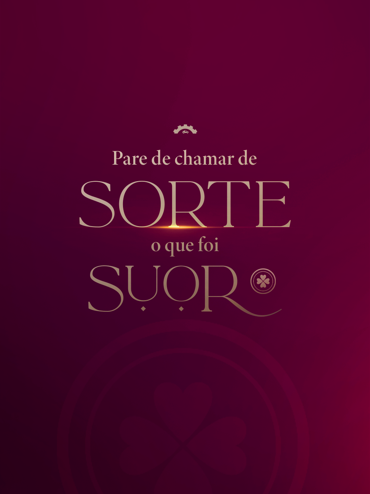
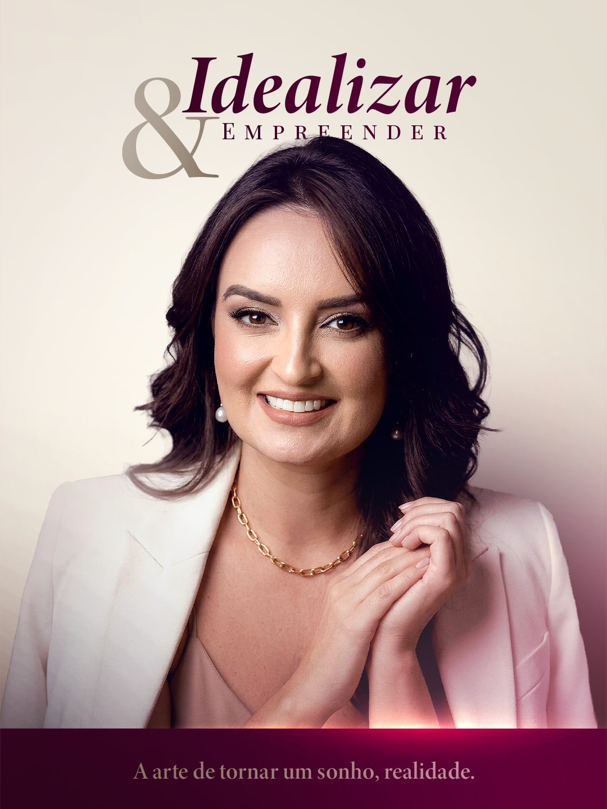
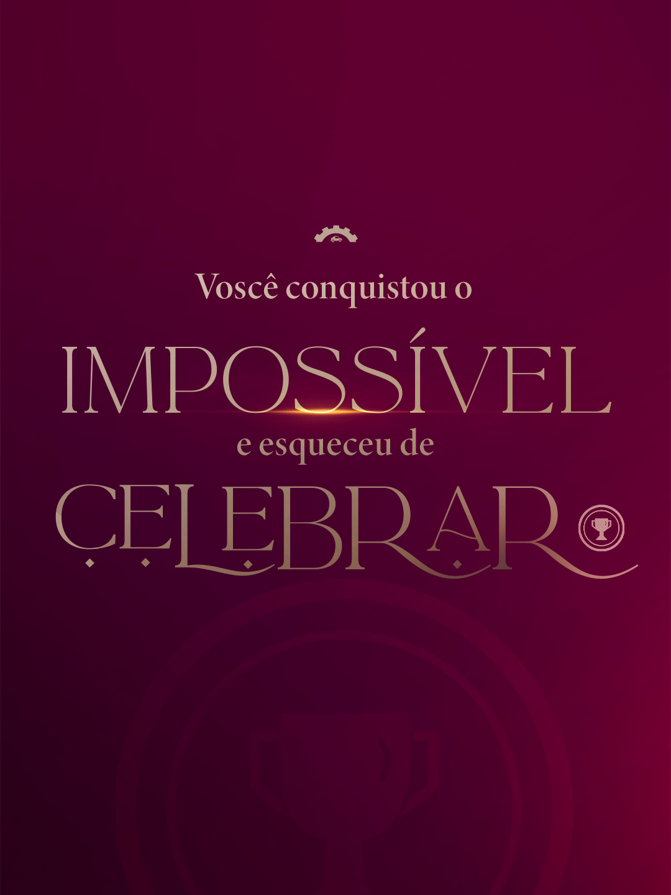
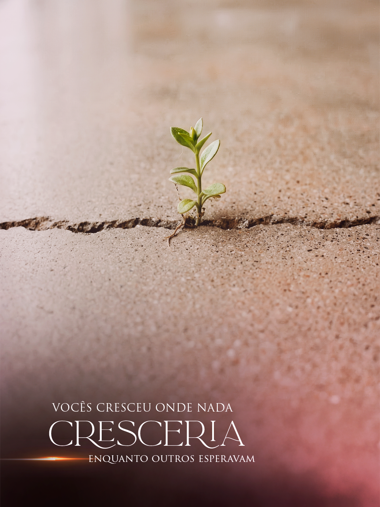
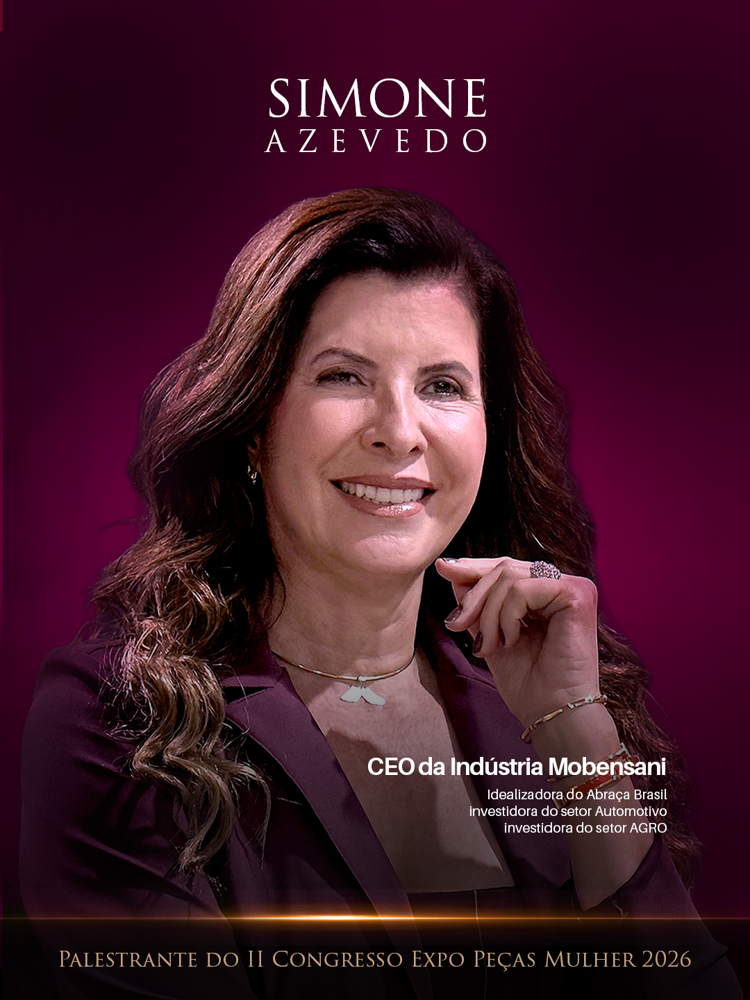
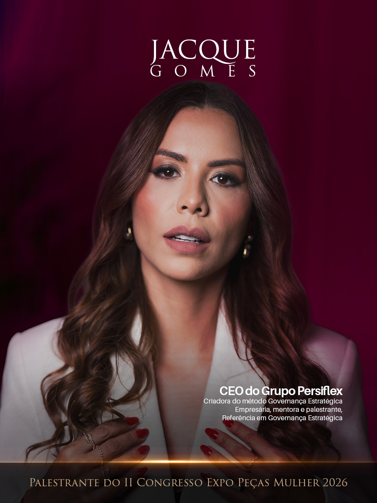
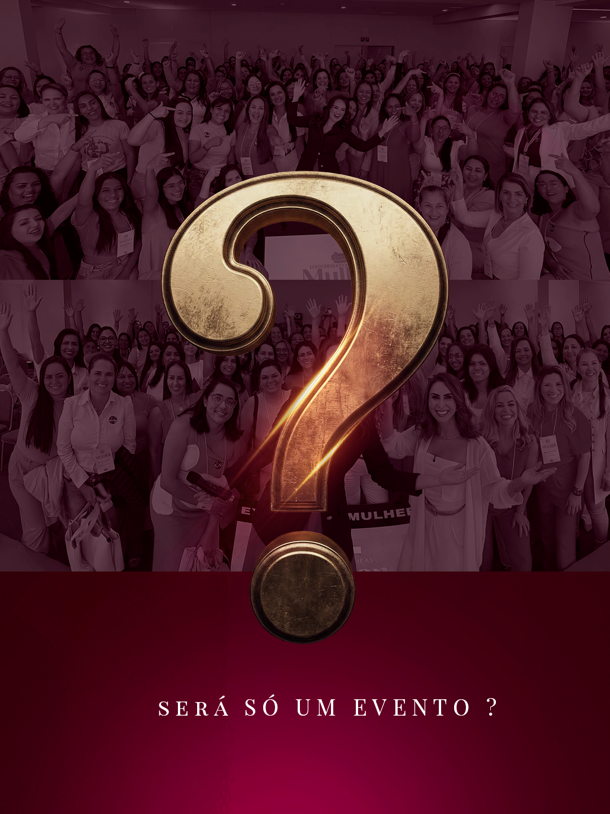

A transição do feed rosa pastel para Marsala + Mulheres Executoras — por que cada peça foi criada assim, o que cada uma diz, e como postar no Instagram.
Entender a mudança é entender o mercado. O Instagram puniu o feed antigo — e o novo foi construído para performar melhor em cada dimensão que o algoritmo avalia.
O algoritmo do Instagram prioriza conteúdo que gera tempo de visualização longo. Quando uma imagem tem texto demais, o usuário passa rapidamente. Quando tem visual forte e texto mínimo, o usuário para para olhar — e o algoritmo interpreta isso como qualidade.
O feed antigo competia com o texto. O novo deixa a imagem trabalhar — e o texto fica na legenda, onde o engajamento conta pontos.
Passe o mouse sobre cada post para ver o título. Abaixo, a defesa completa de cada um.







Para cada peça: o conceito visual, a estratégia editorial, e a legenda pronta para publicar no Instagram.
Aline lendo um livro — warm, acolhedor, humano. A imagem quebra o padrão corporativo logo de início. "Foi assim que o Congresso nasceu" cria curiosidade sem entregar o que vem a seguir. Texto mínimo na imagem, tudo o que importa fica na legenda onde gera comentários.
Posts de origem criam vínculo emocional imediato. A persona (35-45 anos, empresária) se conecta com autenticidade — não com discurso de vendas. Ao contar "como nasceu", o evento ganha propósito, não só produto.
Posts escuros de tipografia são os que mais param o scroll num feed normalmente claro. O contraste Marsala + dourado é sofisticado e único — enquanto o mercado usa rosa, esse post já posiciona o evento como diferente. A tipografia dramatizada com letras grandes funciona como outdoor.
A persona (35-45, empresária) minimiza conquistas cronicamente. "Sorte" é a palavra que ela usa quando deveria dizer "estratégia" ou "suor". Essa frase a confronta diretamente — gera comentários, salvamentos e compartilhamentos.
Após o Marsala intenso do post anterior, o post claro cria respiro visual no feed. A barra Marsala embaixo ancora a identidade sem sobrecarregar. Aline com expressão aberta e acessível — humaniza o evento sem tirar a autoridade.
A frase "A arte de tornar um sonho realidade" não é motivacional vazio — é descritiva do que Aline fez. Esse post apresenta a idealizadora do evento de forma que a persona respeita: como alguém que executou, não apenas sonhou.
Preto e branco confere atemporalidade e autoridade. A escolha de uma CEO global de uma marca conhecida cria prova social por associação — "esse evento fala de mulheres no nível de Indra Nooyi". A série "Mulheres & Histórias" estabelece uma coluna editorial recorrente.
A persona já ouviu 1000x "você é capaz". Ela quer VER como outras fizeram. Histórias de execução real — com custo, contradição e conquista — geram identificação profunda. "Se ela fez, eu posso" converte inscrição. "Acredite em você" não.
A empresária de 35-45 anos conquista continuamente e nunca para para celebrar. Esse post nomeia algo que ela sente mas nunca viu escrito assim. Posts que nomeiam dores invisíveis têm altíssima taxa de compartilhamento porque a pessoa sente "foi feito pra mim".
IMPOSSÍVEL e CELEBRAR em letras grandes forçam a leitura a pausar. O ritmo de leitura desacelera automaticamente — o que aumenta o tempo de visualização e manda sinal positivo pro algoritmo.
Mulher de costas em um campo dourado — pertencimento, liberdade, plenitude. Sem rosto, qualquer mulher se projeta. O logo do congresso discreto no centro da imagem ancora a marca sem poluir. A frase embaixo é a promessa mais honesta que um evento pode fazer: não "você vai aprender", mas "você vai se tornar".
"Não é mais um evento" posiciona diretamente contra a concorrência de eventos motivacionais genéricos. A persona está saturada de eventos. Essa frase valida a fadiga dela e oferece uma alternativa genuína.
Uma planta em uma escadaria de pedra — crescimento em ambiente difícil, mas com calma e intenção. A combinação de escada (progresso) + planta (vida, paciência) comunica tudo sem precisar de texto extenso na imagem. É sofisticado e imediatamente legível.
A empresária de 35-45 anos carrega culpa por descansar. Um post que diz "parar é estratégia" não é motivação vaga — é permissão concreta. Ela vai compartilhar isso para mostrar para si mesma que está certa em pausar.
Uma planta crescendo numa rachadura de concreto é uma das metáforas visuais mais universais de resiliência — e aqui está executada com qualidade fotográfica e lighting cuidadoso. A mensagem é imediata: você cresceu onde as circunstâncias diziam que era impossível crescer.
Esse é o tipo de post que a persona envia para outras mulheres com a mensagem "é você". Alto compartilhamento significa expansão de alcance orgânico — especialmente em Stories, que o algoritmo premia com mais distribuição de feed.
Cecília está sorrindo em um ambiente real — não num estúdio. A citação "divisor de águas" é da própria boca dela, não criada por nós. Isso é prova social genuína. O logo discreto no canto confere autoridade sem sobrecarregar. A frase gera curiosidade: por que foi divisor de águas?
"Isso não é pra mim" é a principal objeção da persona. Ver outra mulher real — não famosa, não perfeita — dizer que mudou sua vida derruba essa objeção de forma mais eficiente que qualquer copy de vendas.
Fundo Marsala profundo + nome em tipografia elegante = apresentação premium. Simone Azevedo como CEO da Mobensani, investidora em dois setores — o currículo por si só vende. A barra dourada embaixo e o texto de palestrante posicionam o evento no nível que o investimento justifica.
A persona está cansada de coaches vendendo fórmula mágica. Simone é empresária que constrói — não consultora que fala. Essa distinção é crítica para a decisão de inscrição.
Jacque olha diretamente para a câmera em fundo Marsala escuro — máxima autoridade visual. A produção de estúdio profissional sinaliza que o evento é sério. O título "CEO do Grupo Persiflex + Criadora do método Governança Estratégica" diz: ela não é teórica, ela executa.
A persona empreendedora 35-45 anos provavelmente gerencia na intuição e sente falta de estrutura. "Governança Estratégica" nomeia exatamente o que falta. O post planta a semente; a legenda rega.
Um ponto de interrogação dourado em 3D sobre fotos reais da edição anterior — visualmente impactante. A pergunta "Será só um evento?" planta uma dúvida no feed de quem ainda não decidiu. Quem já foi sabe a resposta. Quem não foi quer saber.
Ver centenas de mulheres reunidas nas fotos de edições anteriores é a prova mais poderosa. "Isso realmente acontece" quebra a objeção de quem desconfia de eventos que prometem muito. A multidão feliz vende mais que qualquer copy.
O número 25 em tipografia 3D dourada com efeito de luz é o elemento mais impactante do post. Em um feed, esse elemento visual imediatamente gera curiosidade: "25 o quê?". A pessoa para para ler. O algoritmo registra o tempo de visualização. O feed ganha distribuição.
Após posts que criam identificação emocional e apresentam palestrantes, esse post fecha com a data. É o fechamento natural do ciclo de nutrição: interesse → identificação → autoridade → decisão. "Quando é?" agora tem resposta definitiva.
| Elemento | Rosa Pastel (antes) | Marsala (agora) |
|---|---|---|
| Tom emocional | Sonho, aspiração | Realização, poder |
| Perfil da mulher | Buscando inspiração | Executando estratégia |
| Promessa | "Você pode ser" | "Você já é — vem provar" |
| Fase da jornada | Descoberta | Execução |
| Conversão esperada | Seguidora curiosa | Inscrita convicta |
| Diferenciação no nicho | Um entre 500 perfis iguais | Único no nicho de eventos femininos |
| Texto na imagem | Longo — penalizado pelo algoritmo | Mínimo — favorecido pelo algoritmo |
| Parada de scroll | Baixa — cor comum | Alta — cor incomum e impactante |
| Memorabilidade | Confunde com outros perfis | Identidade visual única no grid |
| Maturidade de marca | "Evento fofo" | "Congresso sério" |
Isso não é mudança estética. É evolução estratégica de posicionamento.